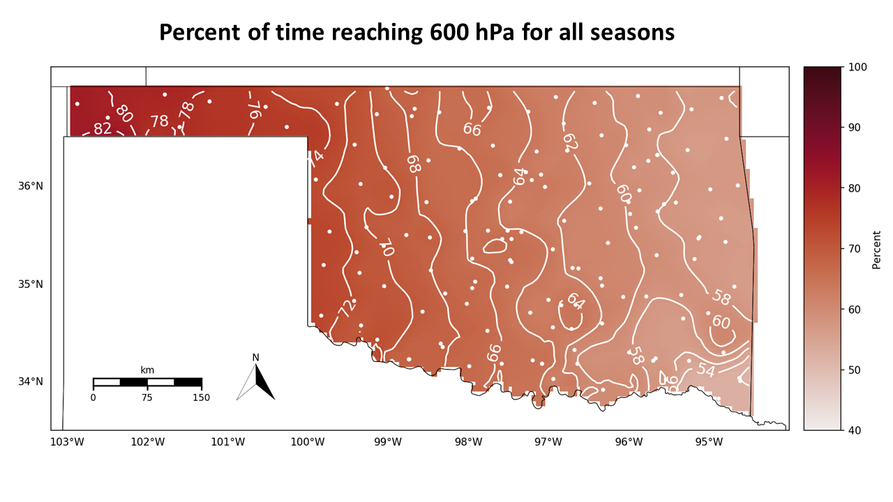

Projects
Investigating Recent Summer Arctic Cyclone Strcuture and Evolution
Arctic cyclones (ACs) have large impacts on sea-ice redistribution and are hazardous to communities in the region, yet the structure and evolution of summer ACs is not fully understood. We aim to link mechanisms that strengthen ACs to their structure at the time of maximum Eady Growth Rate (maxEGR) and minimum sea level pressure (minSLP) for both cold-core and warm-core cyclones. Structure and evolution of summer ACs from 2013–2022 are investigated using an atmospheric GCM with winds and temperature constrained in varying vertical windows. We investigate the extent to which ACs can be controlled by nudging above the boundary layer, above 500 hPa, and above the tropopause (i.e., above 300 hPa). This strategy allows us to separate competing sources of baroclinicity from the surface and atmospheric boundary layer versus the free troposphere. Although deeper storms at minSLP are more likely to be cold core and cold-core storms are nearly always associated with tropopause polar vorticies (TPVs), we find that nudging above the mid troposphere is not enough to constrain the cyclone — the entire free troposphere must be nudged to capture the full structure of a TPV and its association with an AC. In addition, warm versus cold core is a valid classification at both maxEGR and minSLP.
Evaluating Model Biases in the Arctic Boundary Layer: Insights from Comparing the Community Atmosphere Model (CAM) to the Multidisciplinary drifting Observatory for the Study of Arctic Climate (MOSAiC) field campaign
Understanding the Arctic atmosphere's hydrology and associated radiative transfer is imperative for predicting how climate feedbacks control Arctic amplification. Here we present the first study to compare CAM to Arctic atmospheric boundary layer (AABL) observations from MOSAiC data during winter. We aim to uncover model biases associated with the ABL scheme and the microphysics parameterizations used in CAM6 and development versions of CAM ("CAM7"). We have identified a LWP bias during the Arctic winter in nudged simulations using CAM7. This bias is associated with a low bias in downwelling longwave radiation, especially in December 2019. We partially rectify this bias by modifying the microphysics and adding extra diffusion in the ABL. This improved the LWP and downwelling radiation in January. There was still a large discrepancy in December. Our December case study where MOSAiC LWP was substantial suggested that the ABL scheme may be contributing to the bias as well.
The Effect of Climatological Variables on Future UAS-Based Atmospheric Profiling in the Lower Atmosphere

Vertical profiles of wind, temperature, and moisture are essential to capture the kinematic and thermodynamic structure of the atmospheric boundary layer (ABL). Our goal is to use weather observing unmanned aircraft systems (WxUAS) to perform the vertical profiles by taking measurements while ascending through the ABL and subsequently descending to the Earth’s surface. Before establishing routine profiles using a network of WxUAS stations, the climatologies of the flight locations must be studied. This was done using data from the North American Regional Reanalysis (NARR) model. To begin, NARR data accuracy was verified against radiosondes. While the results showed variability in individual profiles, the detailed statistical analyses of the aggregated data suggested that the NARR model is a viable option for the study. Based on these findings, we used NARR data to determine fractions of successful hypothetical flights of vertical profiles across the state of Oklahoma given thresholds of visibility, cloud base level (CBL) height, and wind speed. CBL height is an important parameter because the WxUAS must stay below clouds for the flight restrictions being considered. For the purpose of this study, a hypothetical WxUAS flight is considered successful if the vehicle is able to reach an altitude corresponding to a pressure level of 600 hPa. Our analysis indicated the CBL height parameter hindered the fractions of successful hypothetical flights the most and the wind speed tolerance limited the fractions of successful hypothetical flights most strongly in the winter months. Northwest Oklahoma had the highest fractions of successful hypothetical flights, and the southeastern corner performs the worst in every season except spring, when the northeastern corner performed the worst. Future work will study the potential effect of topology and additional variables, such as amount of rainfall and temperature, on fractions of successful hypothetical flights by region of the state.